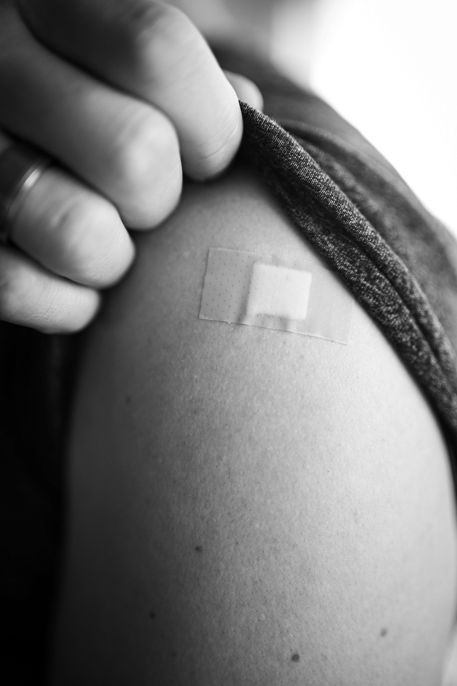

A new Human Papillomavirus (HPV) immunisation programme will now fully cover the out-of-pocket costs of low-income women receiving the Cervarix HPV vaccine. This amounts to S$23 per jab (after government subsidies) over the course of three injections over 12 months.
The programme is a joint partnership between Singapore Cancer Society (SCS) and Temasek Foundation and will “target women who had missed out on the HPV vaccination,” the two organisations said in a joint press release on Thursday (Feb 10) to mark the launch of the HPV immunisation programme.
Temasek Foundation has committed up to S$2 million to fund the co-payment required, with the programme expected to benefit more than 20,000 women who have a household monthly income per person of S$2,000 and below. It will run from now until Oct 30 this year.
Despite it being one of the most preventable cancers among women, there remains a “lack of awareness and uptake in some population groups”, Rahayu Mahzam, Parliamentary Secretary in Ministry of Health and Ministry of Communication and Information, said at the launch of the programme.
“Almost all instances of cervical cancer can be attributed to HPV infection – more than 95 per cent of cervical cancer cases worldwide are a result of the virus,” she said.
“No daughter, sister, wife or mother should be put at risk of developing cervical cancer. Don’t miss out on vaccination because of cost,” said Richard Magnus, Deputy Chairman of Temasek Foundation, in the press release.
The new programme, implemented by SCS, will cover women between 18 and 45 years and benefit those from lower-income families. To qualify for the programme, you have to be:
See here for the list of participating CHAS clinics to go to.
Photography retrieved from Unsplash
Content retrieved from Channel News Asia (CNA Luxury)